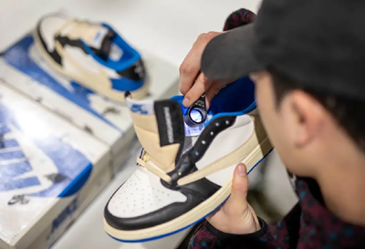

Our Story
Solexchange was founded in Dallas, Texas, by sneaker enthusiasts who turned their passion for collecting into a community-driven marketplace. What began as weekend meetups and online trades has grown into a trusted hub for buying, selling, and trading the most sought-after sneakers.
Our Mission
Our mission is simple: to create a safe, authentic, and reliable space for sneakerheads to connect and exchange heat. Whether you’re chasing the latest drops or hunting for rare classics, Solexchange is here to make every trade transparent and every deal legit.

What Makes Us Different?
At Solexchange, we believe in a community-first mindset. We prioritize building genuine relationships, not just making transactions. Whether you're a celebrity or just a local looking to pick up some kicks, we will cater to your needs. Check out the video below of famous streamer Ray shopping in our store!